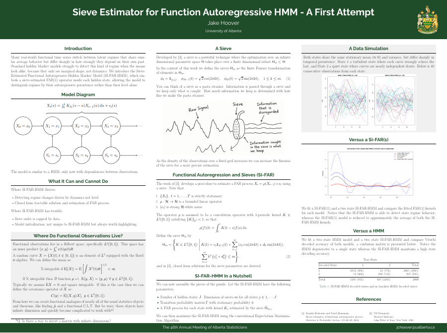
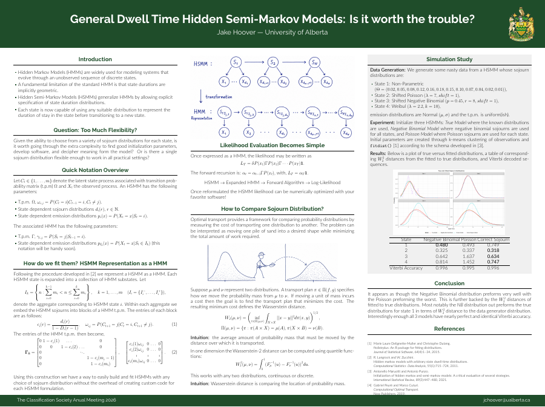

Publications and CV
Publications
- Christian, S., Hoover, J., Gierl, M. J., & Kiamanesh, O. (2026). Psychometric evaluation of a cardiac genetic knowledge scale across pretest education models. Journal of Genetic Counseling, 35(6), e70327.
Preprints
Posters
-

Sieve Estimator for Function Autoregressive HMM – A First Attempt
The 46th Annual Meeting of Alberta Statisticians, 2026. Best PhD Poster.
-

General Dwell Time Hidden Semi-Markov Models: Is it worth the trouble?
Classification Society Annual Meeting, Dalhousie University, Halifax, NS, June 17–18, 2026.